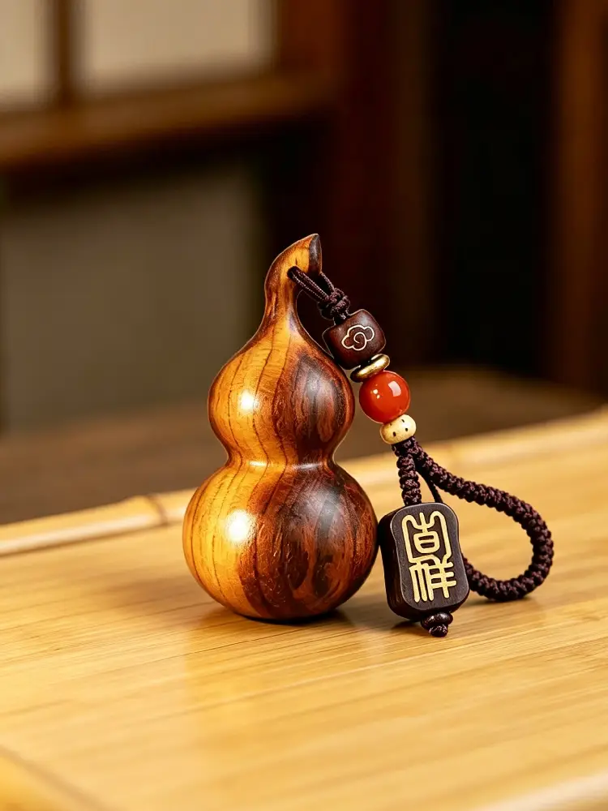
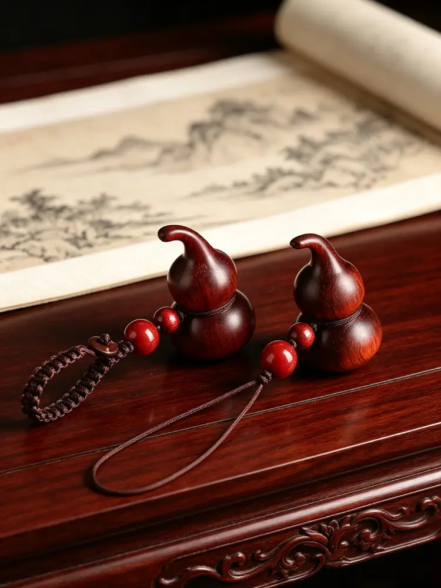

В китайской культуре немного найдётся предметов, наделённых таким же богатством смыслов, как простая тыква-горлянка. Слово «тыква-горлянка» по-китайски — hú lú — звучит почти так же, как «богатство и процветание» (fú lù). Эта простая фонетическая связь на протяжении более двух тысяч лет вплетает тыкву-горлянку в ткань китайской народной культуры, делая её одним из самых любимых символов удачи.
Но тыква-горлянка — это гораздо больше, чем просто талисман. Её округлая, полная форма олицетворяет полноту и гармонию — ценности, глубоко почитаемые в китайской философии. Её узкое горлышко и округлое брюшко, как считается, собирают и удерживают удачу, не позволяя благословениям ускользнуть. А её длинные вьющиеся стебли и обильные семена несут прекрасное обещание преемственности и процветания для грядущих поколений.
В древности люди часто вешали высушенные тыквы-горлянки над входными дверями, чтобы отогнать негатив и привлечь мир в свои дома. В мифах и легендах бессмертные носили тыквы-горлянки как сосуды для волшебных эликсиров, используя их для исцеления, защиты и дарования благословений достойным.
Этот брелок вырезан из древесины персикового дерева, которое с древних времён почитается в китайской традиции как «сущность пяти пород дерева». На протяжении тысячелетий его считали материалом, отвращающим несчастья и защищающим владельца от вреда. В древности люди вырезали из персикового дерева талисманы и вешали их над дверями, чтобы оберегать свои дома. Считается, что древесина персикового дерева несёт мягкую, но устойчивую защитную энергию — это поверье сохраняется и по сей день.

Этот брелок из тыквы-горлянки из персикового дерева объединяет все эти многослойные смыслы в компактной форме. Маленький и изящный, его можно носить с собой где угодно — прикрепить к ключам, повесить на сумку или подарить как продуманный знак внимания тому, кто вам дорог.
Когда вы носите его с собой, вы несёте не просто элегантный маленький предмет, но многовековые накопленные благословения:
— Удачу, сопровождающую каждый выход из дома
— Мир, охраняющий каждое путешествие
— Благополучие, присутствующее в каждом обычном моменте
— Изобилие, наполняющее каждый прожитый день
— Преемственность, связывающую прошлое с будущим

Эта маленькая тыква-горлянка вмещает всё это — тихое, безмолвное благословение древней культуры, которая до сих пор верит в силу символов, в тепло смысла и в тихую искренность маленьких жизненных жестов.

Брелок из персикового дерева в виде тыквы-горлянки с резьбой

Подвеска-тыква-горлянка из полосатого дерева, поражённого молнией

Браслет-тыква-горлянка из красного бамбука и дерева с резьбой в виде дракона

Ожерелье с плетёной тыквой-горлянкой из персикового дерева с натуральным рисунком

Брелок из сандалового дерева тёмного красновато-коричневого цвета в форме тыквы-горлянки

Брелок из персикового дерева с резной надписью «Удача» в форме тыквы-горлянки